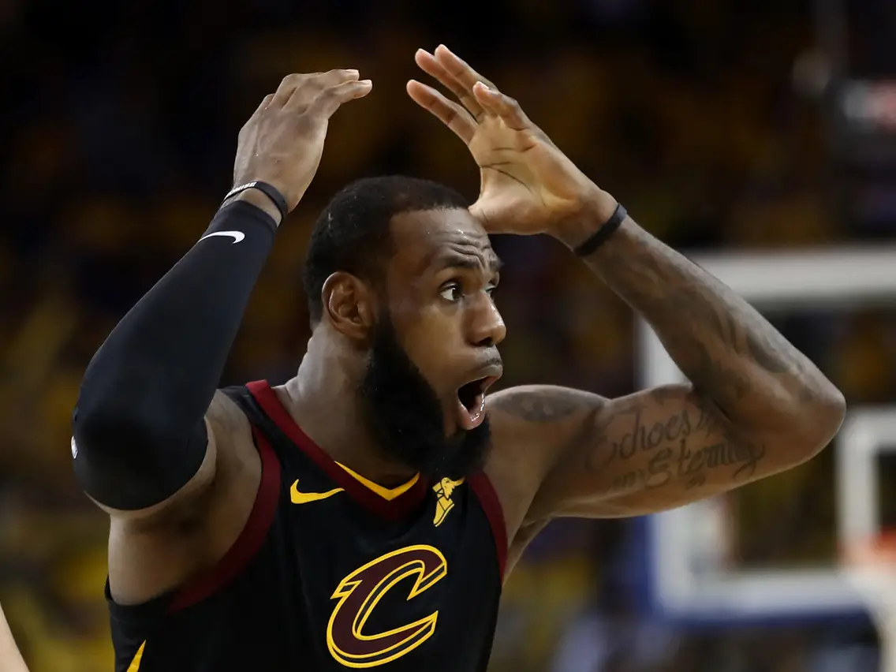

Niesamowity wyczyn LeBrona Jamesa!

LeBron James, 40-letni gwiazdor Los Angeles Lakers, przeszedł do historii NBA,
stając się pierwszym zawodnikiem, który zdobył 50 000 punktów łącznie w sezonie regularnym i fazie play-off.
Osiągnął ten kamień milowy 4 marca 2025 roku podczas meczu przeciwko New Orleans Pelicans,
trafiając za trzy punkty w pierwszej kwarcie po asyście Luki Dončicia.
Na swój imponujący dorobek punktowy James pracował przez 22 sezony,
reprezentując barwy Cleveland Cavaliers, Miami Heat oraz Los Angeles Lakers.
Jego osiągnięcie podkreśla nie tylko wyjątkowy talent, ale także niezwykłą długowieczność i konsekwencję w grze na najwyższym poziomie.
Warto zaznaczyć, że James już wcześniej ustanowił rekordy zarówno w liczbie punktów zdobytych w sezonie regularnym, jak i w fazie play-off.
Jego najnowszy wyczyn umacnia jego pozycję jako jednego z najwybitniejszych koszykarzy w historii.
Po meczu LeBron podkreślił znaczenie wsparcia ze strony rodziny, trenerów i kolegów z drużyny na przestrzeni lat,
zaznaczając, że bez nich osiągnięcie takiego sukcesu nie byłoby możliwe.
Dzięki temu rekordowi James nie tylko zapisuje się złotymi zgłoskami w annałach NBA,
ale także inspiruje kolejne pokolenia sportowców do dążenia do doskonałości i przekraczania własnych granic.
LeBron James osiąga 50 000 punktów w karierze.